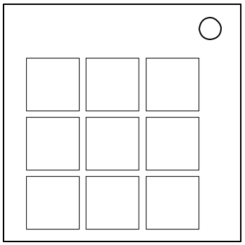

À propos du Défi
Les gens désamorçaient les Carrés Colorés durant l'événement Archipelago... Je suppose que les gens peuvent faire de telles choses avec de telles réstrictions.
Ce module fonctionne de la même manière que les Carrés Colorés. Cependant, la grille est plus petite et il n'y a que 4 couleurs au lieu de 5. De plus, le tableau de configuration change pour chaque module, il faudra donc les trouver soi-même. Ce module n'enregistre jamais d'erreur.